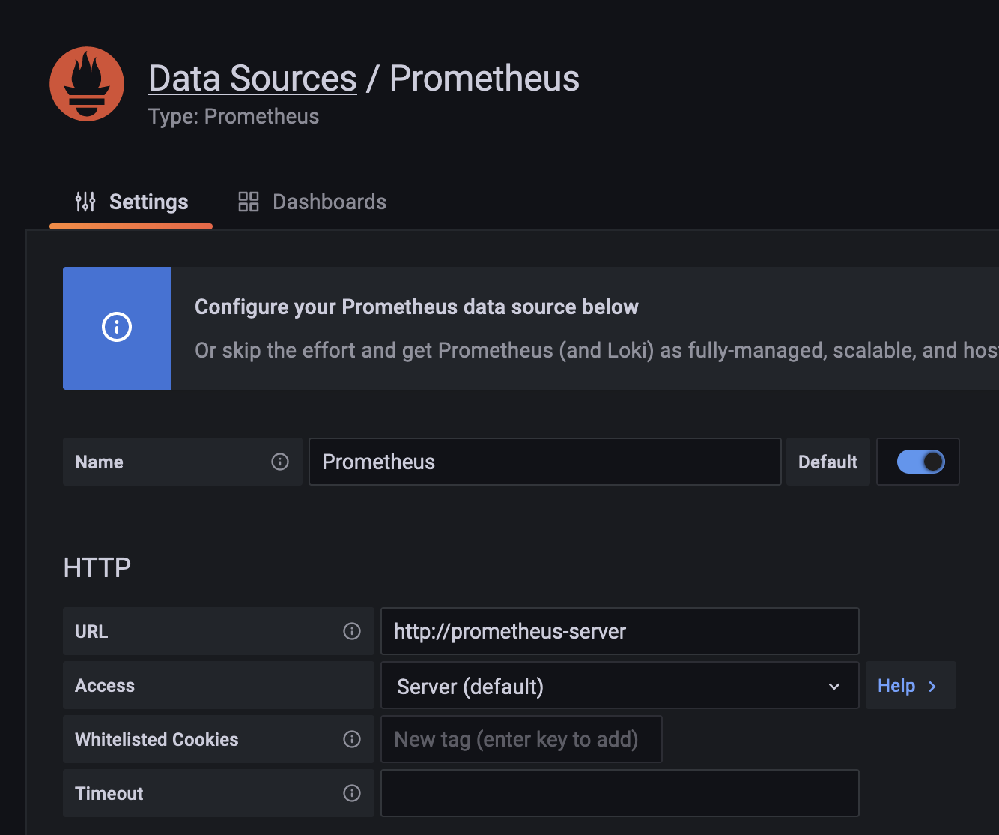
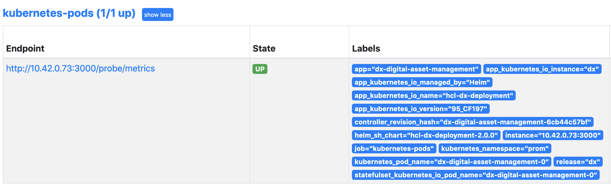

Prometheus
Prometheus is data aggregation tool that is widely used, not only for Kubernetes deployments, but monitoring in general. Prometheus can be configured to pull data from defined data-sources. That pull process is called scraping and happens in configurable intervals. The service/application exposing metrics for Prometheus can often be found under the term exporter, as it exports the values of specific metrics for Prometheus.
How is Prometheus scraping data structured?
The data format of Prometheus scraping data is simple, it consists of key/value pairs that will be consumed by Prometheus. Those data values can have different types, e.g. Counter or Gauges.
There is a good documentation on how exporter data is structured: Prometheus exporter.
Install Prometheus and Grafana
There are two ways of installing Prometheus and Grafana.
Please follow EITHER 1 OR 2:
1. Install Prometheus Operator and Grafana stack
The following process describes the installation of the kube-prometheus-stack helm chart that includes:
- The Prometheus Operator
- Highly available Prometheus
- Highly available Alertmanager
- Prometheus node-exporter
- Prometheus Adapter for Kubernetes Metrics APIs
- kube-state-metrics
- Grafana
This helm chart is based on the kube-prometheus repository, which collects:
[...] Kubernetes manifests, Grafana dashboards, and Prometheus rules combined with documentation and scripts to provide easy to operate end-to-end Kubernetes cluster monitoring with Prometheus using the Prometheus Operator.
This stack comes with a set of tools to monitor the Kubernetes cluster as well as pre-installed Grafana dashboards for visualization.
Add the prometheus-community repository to Helm.
helm repo add prometheus-community https://prometheus-community.github.io/helm-charts
helm repo update
Then deploy the chart with helm install.
helm install -n <namespace> <release name> prometheus-community/kube-prometheus-stack -f <custom-values.yaml>
Example:
helm install -n dxns prometheus-stack prometheus-community/kube-prometheus-stack -f custom-kube-prometheus-stack.yaml
The components of the helm chart can be configured or disabled by adjusting the custom helm values. For a full set of values that can be configured, please follow the configuration section in the repository of the helm chart.
grafana:
adminPassword: "prom-operator"
service:
type: "NodePort"
nodePort: 32767 # range 30000-32767
prometheus:
service:
type: "NodePort"
nodePort: 32766 # range 30000-32767
prometheusSpec:
serviceMonitorSelectorNilUsesHelmValues: false
To access and test Prometheus and Grafana, we expose them on two ports and assign an admin password for Grafana. Setting the serviceMonitorSelectorNilUsesHelmValues parameter to false makes sure that the ServiceMonitors are discovered by Prometheus.
2. Install Prometheus (non-operator)
To install prometheus, we use Helm.
Add Prometheus Helm Chart Repo to Helm:
helm repo add prometheus-community https://prometheus-community.github.io/helm-charts
We can extract the default values via Helm:
helm show values prometheus-community/prometheus > prom-values.yaml
We'll use the following values for a simple PoC deployment of Prometheus, disabling persistence and additional services.
serviceAccounts:
alertmanager:
create: false
nodeExporter:
create: false
alertmanager:
enabled: false
nodeExporter:
enabled: false
server:
enabled: true
persistentVolume:
enabled: false
service:
type: NodePort
pushgateway:
enabled: false
Install the Prometheus Application:
helm install prometheus prometheus-community/prometheus -n prom -f prom-values.yaml
Find the NodePort that is used and access Prometheus:
NODEPORT=$(kubectl get -o jsonpath="{.spec.ports[0].nodePort}" services prometheus-server -n prom)
echo $NODEPORT
You can now access Prometheus using your Browser:
http://<NODE_IP>:<NODE_PORT>
Deploy Grafana
Add Grafana repository to Helm.
helm repo add grafana https://grafana.github.io/helm-charts
We can extract the default values via Helm:
helm show values grafana/grafana > grafana-values.yaml
Use the following custom values to configure the Service as NodePort. Persistence is disabled per default.
service:
enabled: true
type: NodePort
port: 80
targetPort: 3000
portName: service
Install Grafana:
helm install grafana -n prom grafana/grafana -f grafana-values.yaml
Get the NodePort of Grafana:
NODEPORT=$(kubectl get -o jsonpath="{.spec.ports[0].nodePort}" services grafana -n prom)
echo $NODEPORT
Get the adminn password:
kubectl get secret --namespace prom grafana -o jsonpath="{.data.admin-password}" | base64 --decode ; echos
You can now login with the user admin and the returned password.
http://<NODE_IP>:<NODE_PORT>
Configure a datasource
Navigate to Configuration and then go to DataSources. Click on Add data source and select Prometheus.

Add the server url http://prometheus-server.
Click on Save & Test.
Using existing Grafana Dashboards
There are existing Grafana dashboards that can be leveraged.
They can be found on the Grafana Website
DX metrics in this setup
To scrape and visualize the DX metrics in this setup, make sure all applications are configured in the custom-values.yaml with either:
-
For Prometheus Operator
yaml scrape: true prometheusDiscoveryType: "serviceMonitor" -
For Prometheus (non-operator)
yaml scrape: true prometheusDiscoveryType: "annotation"
